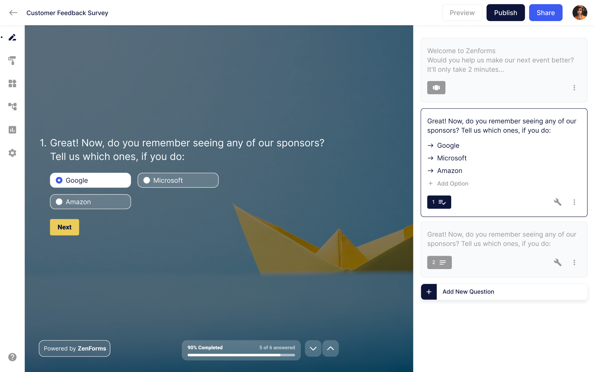
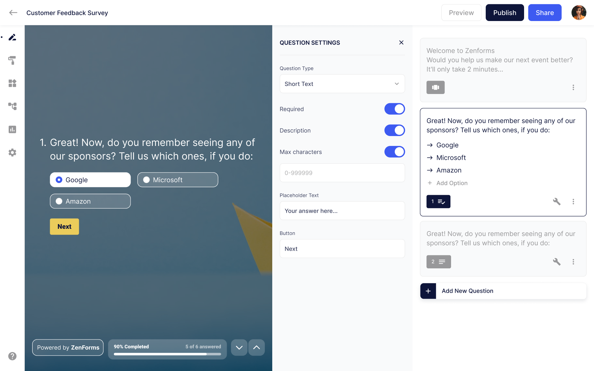
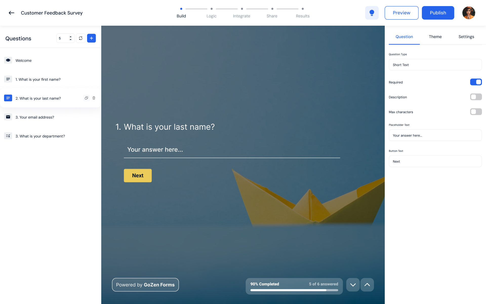
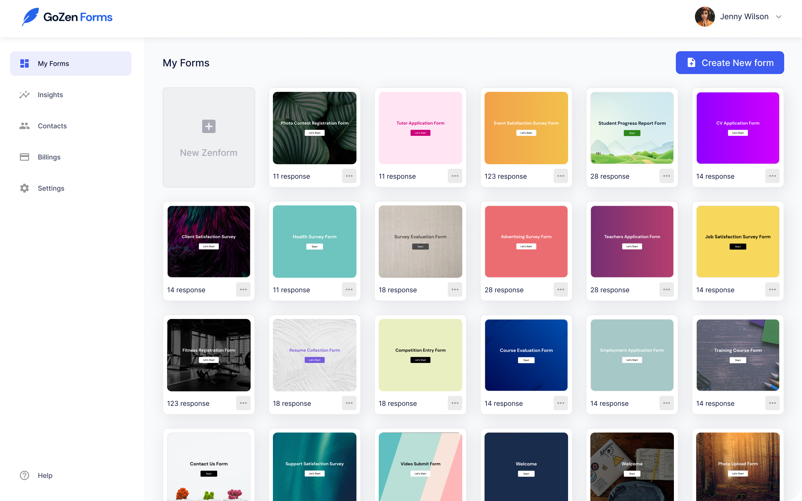
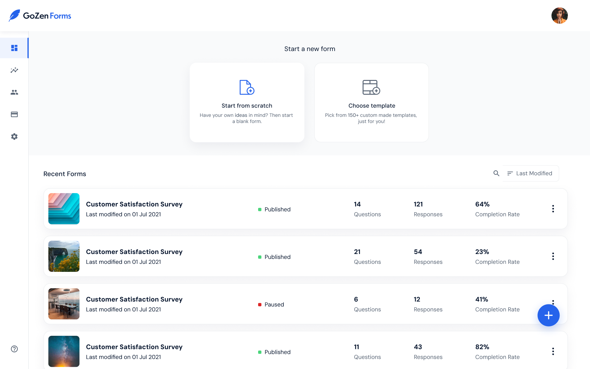
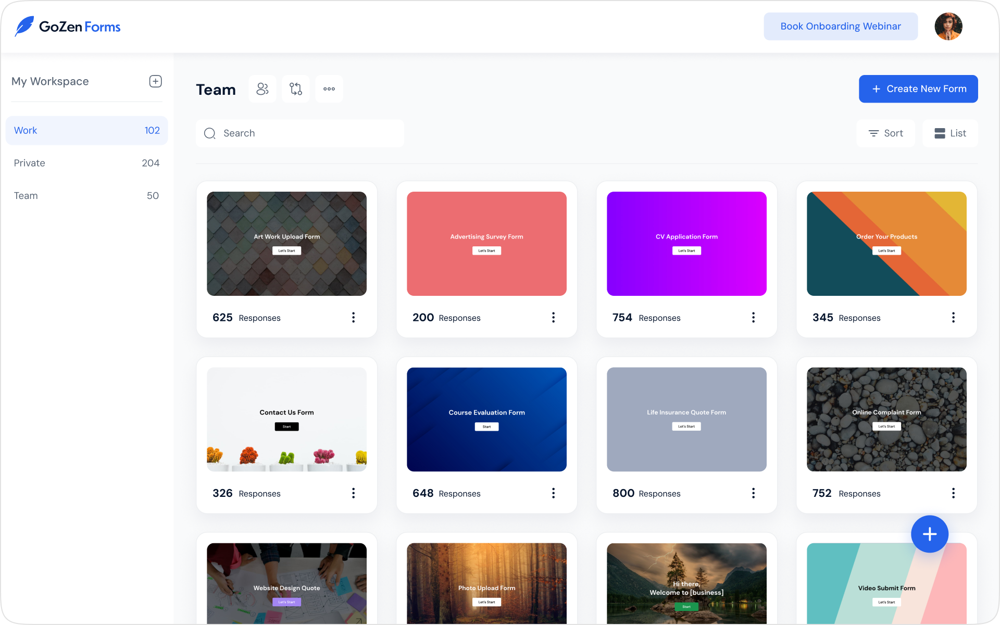

Overview
As a Product Designer at GoZen, I worked on multiple products across the ecosystem. In this case study, I'm sharing the design journey of GoZen Forms, a B2B AI-powered form builder.
I owned the end to end UX flow of this product, from designing the first version to iterating and improving the experience over time. While I was the sole designer on this project, I collaborated closely with the product manager and engineering team.
This case study focuses on improving the usability and clarity of the form creation experience.
About the Product
GoZen Forms is a B2B AI form builder used by marketing and sales teams to create lead capture forms, surveys, and feedback workflows.
The primary goal of the product is to ensure that any user can create a form without any technical assistance. By leveraging AI, the platform simplifies form creation while maintaining flexibility for advanced use cases.
The Problem
As the product evolved, usability issues surfaced in the form creation experience. While users could complete tasks, the flow felt unintuitive and required unnecessary effort.
- Lack of clarity in the form creation stages
- Frequent context switching while editing questions
- Reduced visibility of the final form during configuration
These issues increased cognitive load and made the experience harder for first time users.
Design Impact
The redesigned form builder significantly improved clarity, usability, and editing confidence for users.
- Users gained better awareness of their progress
- Editing became more contextual and less disruptive
- The overall flow felt more guided and predictable
The redesign laid a strong foundation for scaling future features.
Key Metrics
- Improved task completion speed during form creation
- Reduced user confusion and back and forth navigation
- Better discoverability of key form settings
- Fewer usability related support queries
1. Form Builder Screen
The Form Builder is the core experience where users create and configure their forms. In the initial version, users could complete the task, but the interface lacked clarity and disrupted context during editing.
Issue 1: Form creation progress
Users didn't know what stage of the form creation process they were currently in.
- All creation steps were placed inside the left-side menu
- Users had to switch back and forth between steps
- There was no clear sense of progress or completion

Issue 2: Question settings experience
Clicking the question settings icon opened a separate popup that interrupted the editing flow.
- The popup covered a large portion of the screen
- The form preview was not clearly visible
- Users couldn't see changes reflected in real time

Solution
The builder was redesigned to guide users through the flow while keeping them in context during editing.
- Introduced a top progress bar to clearly show the current stage of form creation
- Replaced disruptive popups with a persistent three-panel layout
- Left: Static question list
- Center: Live form preview
- Right: Question settings
This design allows users to move confidently through the flow and instantly see the impact of their changes.

2. Workspace Screen
The Workspace screen serves as the home base for users, where they create, view, and manage all their forms. As GoZen Forms evolved, this screen went through multiple iterations to better align with user workflows and reduce unnecessary complexity.
Below is how the workspace experience evolved over time.
Iteration 1: Navigation heavy workspace
In the first version, the workspace included multiple primary navigation items such as My Forms, Insights, Billing, and Settings in the left sidebar. The main content area displayed forms in a grid layout.
While this structure provided access to all sections, the workspace felt crowded and unfocused. Form management competed with navigation, making it harder for users to immediately understand the primary purpose of the screen.

Iteration 2: Action driven workspace
In the second iteration, the sidebar structure remained the same, but the focus shifted toward form creation. Two primary CTAs were introduced at the top of the workspace:
- Start a form from scratch
- Create a form from a template
The forms list was changed to a list layout to surface more details per form and support quicker scanning.
This improved clarity around creation actions, but the workspace still felt overloaded due to competing navigation elements.

Solution
In the final iteration, the workspace was redesigned to clearly prioritize form management as the primary task.
Secondary sections such as Insights, Billing, and Settings were removed from the main workspace and moved into the profile and settings area. The left panel was repurposed to represent workspaces, allowing users to switch between different contexts. Forms were displayed again in a grid layout to improve visual scanability and recognition.
This resulted in a cleaner, more focused workspace that scales better as the product grows.

Iterative Design Process
The final designs were shaped through multiple iterations, continuous feedback, and close collaboration with product and engineering. Each iteration focused on reducing friction, improving clarity, and keeping the experience scalable as the product evolved.
Conclusion
Designing GoZen Forms was a rewarding challenge that reinforced the value of iterative design and context-aware experiences. By focusing on clarity, reducing cognitive load, and prioritizing core user workflows, the product evolved into a more intuitive and scalable solution. This project strengthened my approach to designing complex B2B products with simplicity and intent.